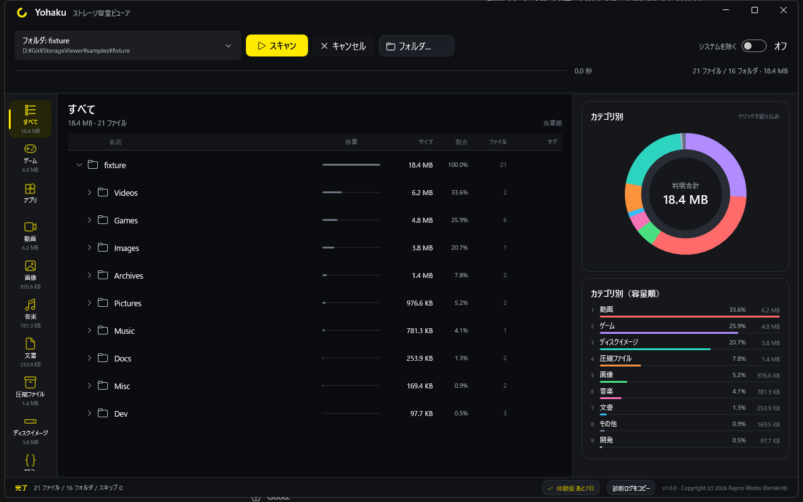

Your whole PC, aggregated by purpose
Aggregates all drives together and shows usage by purpose (category) by default. No need to walk through drives and folders one by one.
Disk space viewer for Windows (WinUI 3)
See your disk usage by game and purpose,
not by folder names
Yohaku is a viewer that shows how your entire PC's disk space is used, organized by games and purposes. It aggregates across all drives and keeps system areas separate, so you can see at a glance how much space your own files actually take.
The download starts a 7-day free trial with all features unlocked.
A license purchase is required for continued use.
The portable version needs no installation - just extract the zip and run it.
Current version: 1.7.0
The app UI is available in English and Japanese - you can switch it under Settings > Display > Language (applied after a restart).
From v1.1, Yohaku includes an optional update-check feature. If you prefer no update checks at all, v1.0.0 (without the update checker) remains available. The same license key works with both versions.
v1.0.0 Installer / v1.0.0 Portable (zip)
One-time purchase - List price ¥1,980 / Launch price ¥1,480
* This is an illustration and may differ from the actual interface.
Aggregates all drives together and shows usage by purpose (category) by default. No need to walk through drives and folders one by one.
Shows sizes per game title, resolved from Steam manifests - "VRChat", not "Game 3". In addition to Steam, game names are resolved for Epic / GOG / Riot, and HoYoPlay titles are resolved from install paths.
System areas such as Windows are shown in a separate group. Results are reconciled against actual disk usage, with any unanalyzed remainder shown, so the totals add up.
Regenerable caches and similar items get safety tags, with their total size shown - VRChat, Unity and Adobe caches and more - so you can judge what is likely safe to remove.
If the automatic classification doesn't match your intent, you can reclassify folders manually, so the totals reflect how you actually use your PC.
Category sidebar on the left, item list in the center, donut and bar charts on the right. Built with WinUI 3 to feel at home on Windows 11.
Select space-hogging items and send them to the Windows Recycle Bin right from the app (never permanently deleted). A confirmation dialog shows the targets and total size first. Important paths such as system areas are protected and cannot be selected.
* The image shows a scan of fixture data (sample data: 21 files / 18.4 MB). Actual contents depend on your PC. The screenshot shows the Japanese UI.

This comparison is about purpose: not "scan faster", but "understand what is using your space".
| Aspect | Typical disk analyzers | Yohaku |
|---|---|---|
| How usage is shown | By path (folder names) | By purpose and game title |
| Game recognition | None (check manually) | Automatic, from Steam manifests (Steam / Epic / GOG / Riot and more) |
| System areas | Mixed into used space | Shown separately, reconciled with disk usage |
| Safety tags | None | Tags on regenerable caches and similar items |
| UI | Legacy | WinUI 3 |
One-time purchase only - no monthly fees or add-on charges. Start with the 7-day trial and try every feature.
Launch price
¥1,480 (tax included)
List price ¥1,980
Launch price period: two weeks from release (until November 23)
Please review the Terms of Use and the Act on Specified Commercial Transactions page (both in Japanese) before purchasing
Couldn't open the checkout page. Please wait a moment and try again. If the problem persists, contact support@mikumiku.online.
Version without update checks (v1.0.0): Installer / Portable (zip)
Download first and try it free for 7 days (all features). A license purchase is required for continued use.
* All prices include tax. The license is a one-time (perpetual) purchase and can be used on up to 3 machines.
Requirements as of version 1.7.0. Any changes will be announced on this page in advance. The app UI can be switched between Japanese and English in the settings.
No - it's a paid app with a one-time price. The list price is ¥1,980 (tax included); for two weeks from release, it's on sale at the launch price of ¥1,480 (tax included). There are no monthly fees.
Yes. The download gives you 7 days with all features unlocked, free of charge. A license purchase is required for continued use.
Yes. Within 7 days of purchase, refunds are unconditional - no reason needed.
Windows 11, and Windows 10 (version 2004 / build 19041 or later).
No. By default, updates are only checked when you press the "Check for updates" button, which looks for the latest version on GitHub. You can switch to checking at startup in settings, but even then nothing is downloaded or installed automatically. A v1.0.0 build without any update checking is also available.
One purchased license key can be used on up to 3 machines.
Your license key is shown on the purchase completion screen and also sent to the email address you provided. Paste it into the license field in the app.
Yes. Since v1.2, you can send selected files and folders to the Windows Recycle Bin. It never permanently deletes. Important paths such as system areas are protected and cannot be selected. To undo, restore the items from the Recycle Bin.
No. It analyzes what a standard user account can read.
Scan and analysis data is never sent anywhere; analysis happens entirely on your PC. Network access occurs only for: (1) license verification, (2) update checks (by default, only when you press the button; automatic at startup only if you enable it in settings), and (3) opening the feedback form (in your own browser).
Open the form from the "Feedback" button in the app (it opens in your browser). Bug reports, feature requests and questions are welcome. (The form is in Japanese.)
The goal is clarity, not speed: Yohaku lets you grasp your usage by purpose and game title.